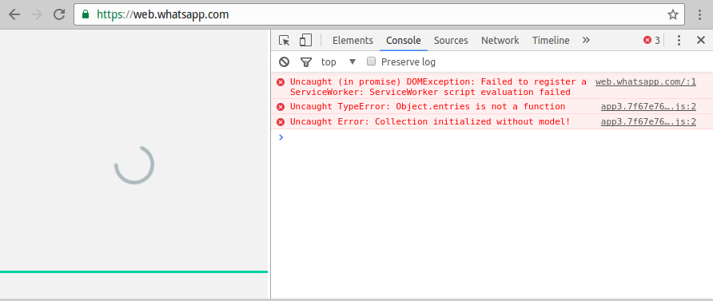
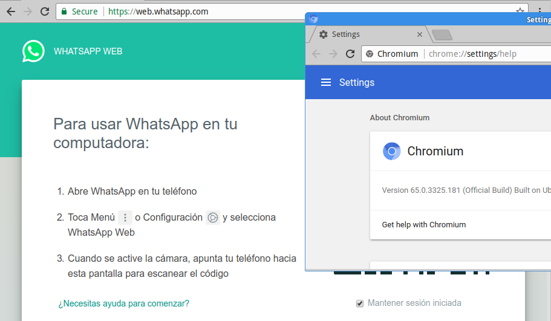

Descripción del problema
Hace unos días WhatsApp dejó de funcionar con los navegadores instalados por defecto en una PC con Ubuntu 14.04 (i386).

Las versiones de los navegadores instalados son:
- Chromium: 53.0.2785.143-0ubuntu0.14.04.1.1145
- Firefox: 50.1.0+build2-0ubuntu0.14.04.1
Debido a que hay programas (applets) que solo funcionan con la versión instalada de Firefox y esta no puede actualizarse, el PC no utiliza el repositorio de ubuntu sinó un repositorio local de una versión no actualizada del repositorio de ubuntu.
La solución propuesta es actualizar la versión del navegador web Chromium, pero no se encontró información sobre las versiones de los navegadores soportados por WhatsApp, por lo que se probará actualizar a la última versión soportada de Chromium por Ubuntu 14.04 y ver si funciona con WhatsApp al día de hoy (2019-07-19).
Prueba de actualización de Chromium
Ya que se está utilizando un repositorio local para controlar que paquetes serán instalados se comienza agregando el repositorio de ubuntu y actualizando la lista de paquetes:
$ cat <<'END' | sudo tee /etc/apt/sources.list.d/repositorio-ubuntu.list >/dev/null
deb http://archive.ubuntu.com/ubuntu trusty main universe multiverse restricted
deb http://archive.ubuntu.com/ubuntu trusty-updates main universe multiverse restricted
deb http://archive.ubuntu.com/ubuntu trusty-security main universe multiverse restricted
deb http://archive.ubuntu.com/ubuntu trusty-backports main universe multiverse restricted
END
$ sudo apt-get update
Luego se listan las versiones disponibles para instalar (para asegurarnos de que no tenemos la última versión ya instalada, y si supieramos la versión minima soportada se podría determinar en este paso si continuar o no):
$ apt-cache policy chromium-browser
chromium-browser:
Installed: 53.0.2785.143-0ubuntu0.14.04.1.1145
Candidate: 65.0.3325.181-0ubuntu0.14.04.1
Version table:
65.0.3325.181-0ubuntu0.14.04.1 0
500 http://archive.ubuntu.com/ubuntu/ trusty-updates/universe i386 Packages
500 http://archive.ubuntu.com/ubuntu/ trusty-security/universe i386 Packages
*** 53.0.2785.143-0ubuntu0.14.04.1.1145 0
500 http://mirror.example.com/ubuntu/ trusty-updates/universe i386 Packages
500 http://mirror.example.com/ubuntu/ trusty-security/universe i386 Packages
100 /var/lib/dpkg/status
34.0.1847.116-0ubuntu2 0
500 http://mirror.example.com/ubuntu/ trusty/universe i386 Packages
500 http://archive.ubuntu.com/ubuntu/ trusty/universe i386 Packages
Otra pregunta a hacernos es ¿que paquetes se instalarían junto al paquete
chromium-browser?. Esto nos interesa para conocer el impacto y saber que
paquetes hay que descargar del repositorio de ubuntu:
$ sudo apt-get install -sV chromium-browser
...
The following packages will be upgraded:
chromium-browser (53.0.2785.143-0ubuntu0.14.04.1.1145 => 65.0.3325.181-0ubuntu0.14.04.1)
chromium-browser-l10n (53.0.2785.143-0ubuntu0.14.04.1.1145 => 65.0.3325.181-0ubuntu0.14.04.1)
chromium-codecs-ffmpeg-extra (53.0.2785.143-0ubuntu0.14.04.1.1145 => 65.0.3325.181-0ubuntu0.14.04.1)
libnspr4 (4.10.10-0ubuntu0.14.04.1 => 4.13.1-0ubuntu0.14.04.1)
libnspr4-0d (4.10.10-0ubuntu0.14.04.1 => 4.13.1-0ubuntu0.14.04.1)
libnss3 (3.19.2.1-0ubuntu0.14.04.2 => 3.28.4-0ubuntu0.14.04.5)
libnss3-1d (3.19.2.1-0ubuntu0.14.04.2 => 3.28.4-0ubuntu0.14.04.5)
libnss3-nssdb (3.19.2.1-0ubuntu0.14.04.2 => 3.28.4-0ubuntu0.14.04.5)
8 upgraded, 0 newly installed, 0 to remove and 523 not upgraded.
...
De la salida anterior se ve que hay varios paquetes aparte de chromium-browser que serán instalados:
- Relativos a
chromium:chromium-browser,chromium-browser-l10nychromium-codecs-ffmpeg-extra. - Relativos a
libnspr4:libnspr4ylibnspr4-0d. - Relativos a
libnss3:libnss3,libnss3-1dylibnss3-nssdb:
Se pasa a buscar cuales son las versiones necesarias de las dependencias
directas del paquete chromium-browser. Esto es para evitar descargar e
instalar paquetes que pueden actualizarse desde el repositorio local:
$ apt-cache show chromium-browser=65.0.3325.181-0ubuntu0.14.04.1 | grep -P '^Depends:|^Recommends:' | tr , '\n' | grep -P 'libnspr4|libnss3'
libnspr4 (>= 2:4.9-2~) | libnspr4-0d (>= 1.8.0.10)
libnss3 (>= 2:3.22)
Nota: si las dependencias anteriores no fueran directas del paquete
chromium-browser sinó transitivas encontrar las versiones anteriores
sería más difícil.
Revisando las versiones disponibles de los paquetes libnspr4 y libnss3 se
obtiene:
$ apt-cache policy libnspr4 libnss3
libnspr4:
Installed: 2:4.10.10-0ubuntu0.14.04.1
Candidate: 2:4.13.1-0ubuntu0.14.04.1
Version table:
2:4.13.1-0ubuntu0.14.04.1 0
500 http://archive.ubuntu.com/ubuntu/ trusty-updates/main i386 Packages
500 http://archive.ubuntu.com/ubuntu/ trusty-security/main i386 Packages
2:4.12-0ubuntu0.14.04.1 0
500 http://mirror.example.com/ubuntu/ trusty-updates/main i386 Packages
500 http://mirror.example.com/ubuntu/ trusty-security/main i386 Packages
*** 2:4.10.10-0ubuntu0.14.04.1 0
100 /var/lib/dpkg/status
2:4.10.2-1ubuntu1 0
500 http://mirror.example.com/ubuntu/ trusty/main i386 Packages
500 http://archive.ubuntu.com/ubuntu/ trusty/main i386 Packages
libnss3:
Installed: 2:3.19.2.1-0ubuntu0.14.04.2
Candidate: 2:3.28.4-0ubuntu0.14.04.5
Version table:
2:3.28.4-0ubuntu0.14.04.5 0
500 http://archive.ubuntu.com/ubuntu/ trusty-updates/main i386 Packages
500 http://archive.ubuntu.com/ubuntu/ trusty-security/main i386 Packages
2:3.26.2-0ubuntu0.14.04.3 0
500 http://mirror.example.com/ubuntu/ trusty-updates/main i386 Packages
500 http://mirror.example.com/ubuntu/ trusty-security/main i386 Packages
*** 2:3.19.2.1-0ubuntu0.14.04.2 0
100 /var/lib/dpkg/status
2:3.15.4-1ubuntu7 0
500 http://mirror.example.com/ubuntu/ trusty/main i386 Packages
500 http://archive.ubuntu.com/ubuntu/ trusty/main i386 Packages
O sea, libnspr4 ya cumple con las dependencias y libnss3 necesita
actualizarse, pero la versión en el repositorio interno satisface la
dependencia, por lo cual solo es necesario descargar los paquetes
chromium-browser, chromium-browser-l10n y chromium-codecs-ffmpeg-extra:
$ apt-get download chromium-browser chromium-browser-l10n chromium-codecs-ffmpeg-extra
Al momento de instalar los paquetes anteriores y corregir dependencias se desea utilizar solo los repositorios internos, por lo cual se deshabilita el repositorio de ubuntu:
$ sudo mv /etc/apt/sources.list.d/repositorio-ubuntu.list{,.disabled}
$ sudo apt-get clean
$ sudo apt-get update
Se instalan los paquetes descargados:
$ sudo dpkg -i chromium-browser_65.0.3325.181-0ubuntu0.14.04.1_i386.deb \
chromium-browser-l10n_65.0.3325.181-0ubuntu0.14.04.1_all.deb \
chromium-codecs-ffmpeg-extra_65.0.3325.181-0ubuntu0.14.04.1_i386.deb
...
dpkg: dependency problems prevent configuration of chromium-browser:
chromium-browser depends on libnss3 (>= 2:3.22); however:
Version of libnss3:i386 on system is 2:3.19.2.1-0ubuntu0.14.04.2.
dpkg: error processing package chromium-browser (--install):
dependency problems - leaving unconfigured
dpkg: dependency problems prevent configuration of chromium-browser-l10n:
chromium-browser-l10n depends on chromium-browser (>= 65.0.3325.181-0ubuntu0.14.04.1); however:
Package chromium-browser is not configured yet.
chromium-browser-l10n depends on chromium-browser (<< 65.0.3325.181-0ubuntu0.14.04.1.1~); however:
Package chromium-browser is not configured yet.
dpkg: error processing package chromium-browser-l10n (--install):
dependency problems - leaving unconfigured
...
Errors were encountered while processing:
chromium-browser
chromium-browser-l10n
El error de que no se cumple la dependencia era esperable, ya que se vió
anteriormente que la dependencia se satisface actualizando libnss3 con la
versión de los repositorios internos.
Para corregir la instalación se utiliza la opción --fix-broken de apt-get:
$ sudo apt-get install -V --fix-broken
...
The following packages will be upgraded:
libnspr4 (4.10.10-0ubuntu0.14.04.1 => 4.12-0ubuntu0.14.04.1)
libnspr4-0d (4.10.10-0ubuntu0.14.04.1 => 4.12-0ubuntu0.14.04.1)
libnss3 (3.19.2.1-0ubuntu0.14.04.2 => 3.26.2-0ubuntu0.14.04.3)
libnss3-1d (3.19.2.1-0ubuntu0.14.04.2 => 3.26.2-0ubuntu0.14.04.3)
libnss3-nssdb (3.19.2.1-0ubuntu0.14.04.2 => 3.26.2-0ubuntu0.14.04.3)
5 upgraded, 0 newly installed, 0 to remove and 331 not upgraded.
...
Setting up chromium-browser (65.0.3325.181-0ubuntu0.14.04.1) ...
Setting up chromium-browser-l10n (65.0.3325.181-0ubuntu0.14.04.1) ...
Processing triggers for libc-bin (2.19-0ubuntu6.6) ...
Ahora, probando nuevamente WhatsApp se que ve funciona con la versión 65 de Chromium.
